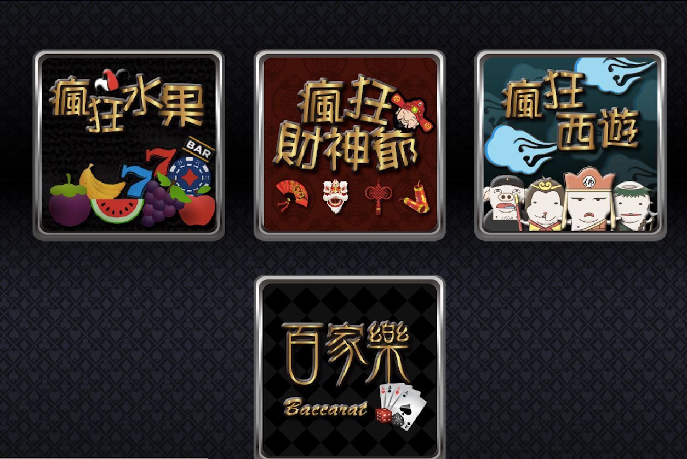
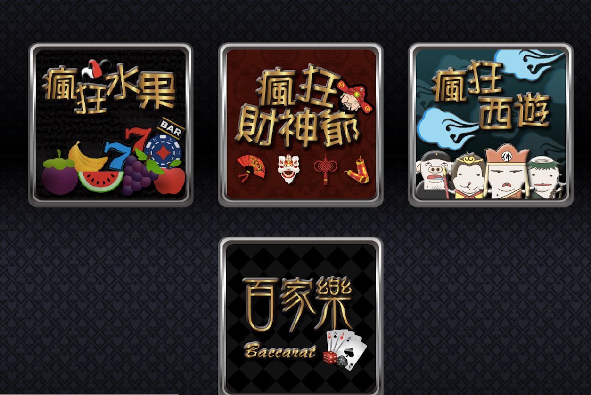
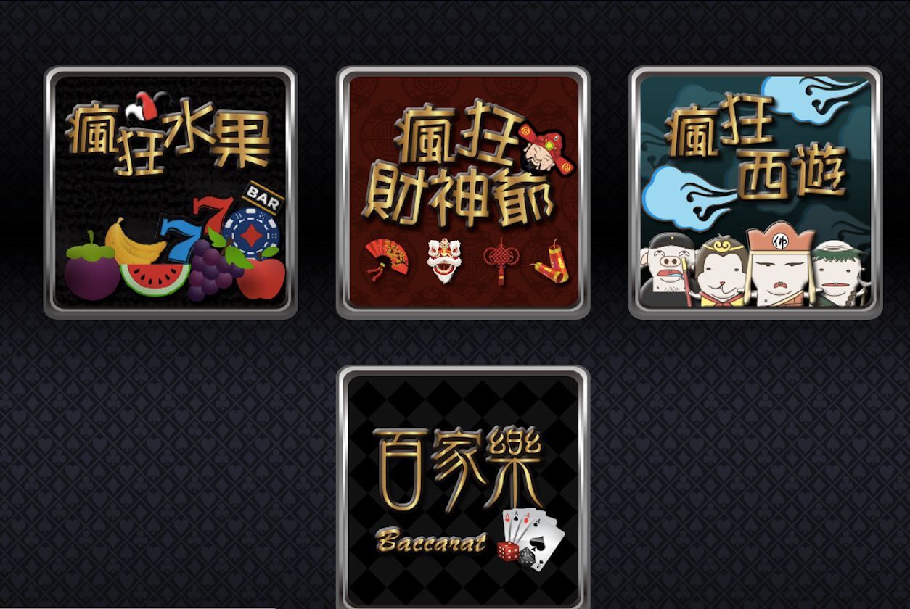

CodePlay
hello world
經歷
自我介紹
Hi，你好！
我叫張欽揚，2011年畢業於長榮大學醫務管理學系，大學一年級時因接觸過 C++程式語言且實作出一些成果進而產生興趣；大學畢業時所作的專題名稱為「病歷資訊化」，藉此與實習醫院之資訊人員交流後，對於程式的理論與運作有更深的了解；大學畢業後，白天從事與本科系相關的工作，晚上則利用下班時間自學網路爬蟲，在學習過程中，接觸了Html、Php，並重中獲得許多成就感，最後辭去原本的工作，踏入Web的世界。
投入Web相關領域之後，開始在「E11不動產」資訊部門工作，一開始係負責維護公司的網頁、配合使用者需求新增網頁功能等，由於該公司資訊部門無特別區分前端或後端，透過此工作不僅更熟練Html與Php，亦學會使用SQL，甚至是 Css、Javascript、JQuery、Ajax等前端技術。
三個月後，因公司經營目標及理念改變，需要另外建置大型網頁平台，很幸運的，藉此學會使用PHP框架CodeIgniter以及前端元件庫Bootstrap、AngularJS框架，以便管理程式碼，但因程式碼越來越龐大，因此學習Git作為程式碼版本管理控制的工具。另外，先前自學的網頁爬蟲技術亦從一開始的Php curl改為autoit，到目前大型網頁平台需要穩定且快速及方便管理的爬蟲而使用python。
工作之餘，平常亦會嘗試做一些系統功能，例如：上班自動打卡系統等，亦有與同事做技術交流，共同構想、設計平台並實作出成品，為了磨練並增進自身的技術，去(105)年跟同事共同組隊，參加第一屆台灣農業阿龜松(農業-Agriculture+黑客松-Hackathon)；此外，亦利用假日閒暇時間邀集對於Web有著濃厚興趣的好友們參加讀書會，一同專研、獲取新的專業知識與技術能力，例如：Emmet、Scss加速網頁開發的工作流程及Gulp讓網頁前端自動化等。
對於未來的期許，除了充實自身現有的技術外，亦會放更多心思專研Ruby on Rails、NodeJs、VueJs等尚未開發的技術上，努力累積實力成為不論是前端或後端皆能得心應手的工程師，期望貴公司能給予寶貴的機會至貴公司發揮所長及專業技能。
Github：
https://github.com/crazyms520
GithubPage：
https://crazyms520.github.io/crazyms520
公司目前網站作品可以到以下鏈結參觀
E11：
http://www.e11tw.com
BigFun 找房比價網：
https://www.ibigfun.com
以上是我的個人簡單履歷，謝謝
工作經歷
E11不動產全端工程師
2015／11～2017／08
學歷
私立長榮大學(台灣)
醫務管理學系(醫務管理相關)大學
2007／09～2011／06(畢業)
技能
Html
Css&Css3
Javascript,Jquery
Gulp
Php
Python Crawler
作品集
<
 >
>
Project | 01
<


 



 >
>

Project | 02
<


 >
>
Project | 03
卡爾小鎮
原本是翠峰農場的停車場，因搭上休閒露營熱潮，經過整修後，搖身一變，變成五星級營地，網站係讓使用者可以在線上預約、繳費、租借設備、查詢訂單狀態，而管理者透過後台，可以方便管理使用者訂單、設備管理等...
卡爾小鎮
<


 >
>
Project | 04
農作物產量查詢平台
台灣第一屆阿龜松的參賽作品，透過政府的開放資料，取得每年的各種農作物產量、價格，並讓農民可以自行填寫預估的收穫量，透過演算顯示出收穫期可能的價格及產量是否可能過剩，讓農民評估是否要耕種該作物，預防供過於求而導致價格崩盤。
阿龜松農作物產量查詢平台